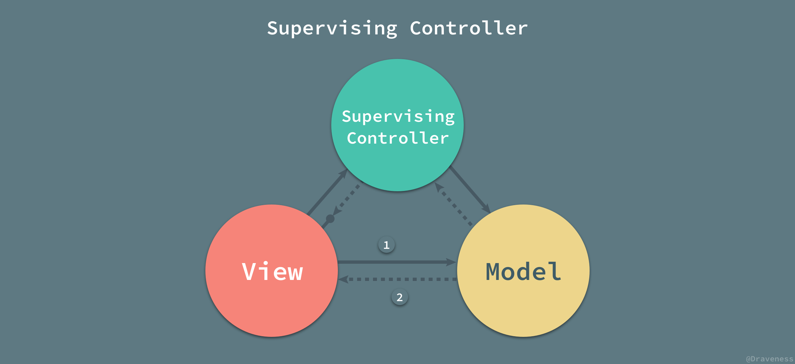

学线：MVP与MVVM引入
MVP
为什么不用MVC
我们先来定义什么是好的软件架构：
- 软件架构上具有明确的分工，各个模块的功能职责平衡分配，且明确。
- 可测试性，通常良好的软件架构都具备良好的可测试性。
- 良好的易用性，维护成本低。
MVC一个很大的问题在于所有的逻辑都在Controller层，不可避免的会造成Controller层非常复杂，如果项目越来越大，Controller层的代码会更加臃肿，维护起来也非常麻烦。除此之外：
视图与控制器间的过于紧密的连接
视图与控制器是相互分离，但却是联系紧密的部件，视图没有控制器的存在，其应用是很有限的，反之亦然，这样就妨碍了他们的独立重用。
视图对模型数据的低效率访问
依据模型操作接口的不同，视图可能需要多次调用才能获得足够的显示数据。对未变化数据的不必要的频繁访问，也将损害操作性能。
不太友好的单元测试
特别是App上做单元测试的时候很多东西依赖于系统框架，没法脱离用户接口来测试这些逻辑单元。
等等。
MVP Basic
MVP 架构模式是 MVC 的一个变种，很多框架都自称遵循 MVC 架构模式，但是它们实际上却实现了 MVP 模式；MVC 与 MVP 之间的区别其实并不明显，两者之间最大的区别就是 MVP 中使用 Presenter 对视图和模型进行了解耦，它们彼此都对对方一无所知，沟通都通过 Presenter 进行。在 MVP 中，Presenter 可以理解为松散的控制器，其中包含了视图的 UI 业务逻辑，所有从视图发出的事件，都会通过代理给 Presenter 进行处理；同时，Presenter 也通过视图暴露的接口与其进行通信。

在MVC中，视图View的逻辑会在Fragment或者Activity处理，而且Model层的业务也是在Fragment或者Activity中处理，这样会导致一个问题，Fragment或者Activity中代码臃肿，难以维护，其实正是这个原因，MVP架构在Android开发中呼声一直很高。
在MVP中，虽然视图View还是在Fragment或者Activity中处理，但是Model层的业务被放到了Presenter层，类似于增加了一层职责部门，Fragment或者Activity有一部分职责转接给了Presenter，所有View层操作都是通过Presenter传递给Model，这样有效减轻了Fragment或者Activity的负担，View与Model不直接交互，而是通过与Presenter来完成交互，这样可以修改视图而不影响模型Model，达到解耦的目的。
Android开发中，有时候某个界面的视图很复杂，并且界面中各模块使用的接口也不同，这种场景则可以显示出MVP架构的优势了。假设当前界面只需要一个接口数据就可以满足，添加了一层Presenter可能在架构上有些多余，但是一旦服务器接口有变动，为了减轻服务端压力，现将接口拆分，本来请求一个接口可以满足需要，现在可能需要请求两个甚至多个接口，这就是所谓的Model层有变动，但是视图层View不变。既然View层所需要的数据格式是特定的，那么就可以根据具体业务需要，在Presenter将拆分的接口重新组合为原视图层需要的数据格式，然后传递给View，这样View层相当于没有做任何变化，很好的解耦了View和Model。
常见的 MVP 架构模式
目前常见的 MVP 架构模式其实都是它的变种：Passive View 和 Supervising Controller，接下来的内容也是围绕这两种变种进行展开的。
被动视图(Passive View)
MVP 的第一个主要变种就是被动视图（Passive View）；顾名思义，在该变种的架构模式中，视图层是被动的，它本身不会改变自己的任何的状态，所有的状态都是通过 Presenter 来间接改变的。
被动的视图层就像前端中的 HTML 和 CSS 代码，只负责展示视图的结构和内容，本身不具有任何的逻辑：
1 | <article class="post"> |
依赖关系
视图成为了完全被动的并且不再根据模型来更新视图本身的内容，也就是说，不同于 MVC 中的依赖关系；在被动视图中，视图层对于模型层没有任何的依赖：
因为视图层不依赖与其他任何层级也就最大化了视图层的可测试性，同时也将视图层和模型层进行了合理的分离，两者不再相互依赖。
通信方式
被动视图的示意图中一共有四条线，用于表示 Model、View 和 Presenter 之间的通信：

- 当视图接收到来自用户的事件时，会将事件转交给
Presenter进行处理； - 被动的视图向外界暴露接口，当需要更新视图时
Presenter通过视图暴露的接口更新视图的内容； Presenter负责对模型进行操作和更新，在需要时取出其中存储的信息；- 当模型层改变时，可以将改变的信息发送给观察者
Presenter；
在 MVP 的变种被动视图中，模型的操作以及视图的更新都仅通过 Presenter 作为中间人进行。
监督控制器(Supervising Controller)
与被动视图中状态同步都需要显式的操作不同，监督控制器（Supervising Controller）就将部分需要显式同步的操作变成了隐式的：
在监督控制器中，视图层接管了一部分视图逻辑，主要内容就是同步简单的视图和模型的状态；而监督控制器就需要负责响应用户的输入以及一部分更加复杂的视图、模型状态同步工作。
对于用户输入的处理，监督控制器的做法与标准 MVP 中的 Presenter 完全相同；但是对于视图、模型的同步工作，监督控制器会尽可能地将所有简单的属性以数据绑定的形式声明在视图层中，类似于 Vue 中双向绑定的简化版本：
1 | <a v-bind:href="url"></a> |
剩下的无法通过上述方式直接绑定的属性就需要通过监督控制器来操作和更新了。
通信方式
监督控制器中的视图和模型层之间增加了两者之间的耦合，也就增加了整个架构的复杂性：
视图和监督控制器、模型与监督控制器的关系与被动视图中两者与 Presenter 的关系几乎相同，视图和模型之间新增的依赖就是数据绑定的产物；视图通过声明式的语法与模型中的简单属性进行绑定，当模型发生改变时，会通知其观察者视图作出相应的更新。
通过这种方式能够减轻监督控制器的负担，减少其中简单的代码，将一部分逻辑交由视图进行处理；这样也就导致了视图同时可以被 Presenter 和数据绑定两种方式更新，相比于被动视图，监督控制器的方式也降低了视图的可测试性和封装性。
占主导地位的视图
无论是在被动视图还是监督控制器版本的 MVP 架构模式中，视图层在整个架构中都是占主导地位的：

在 MVC 中，控制器负责以不同的视图响应客户端请求的不同动作；然而，不同于 MVC 模式，MVP 中视图将所有的动作交给 Presenter 进行处理；MVC 中的所有的动作都对应着一个控制器的方法调用，Web 应用中的每一个动作都是对某一个 URL 进行的操作，控制器根据访问的路由和方法（GET 等）对数据进行操作，最终选择正确的视图进行返回。
MVC 中控制器返回的视图没有直接绑定到模型上，它仅仅被控制器渲染并且是完全无状态的，其中不包含任何的逻辑，但是 MVP 中的视图必须要将对应的事件代理给 Presenter 执行，否则事件就无法被响应。
MVP存在的弊端
Presenter（以下简称P）层与View（以下简称V）层是通过接口进行交互的，接口粒度不好控制。粒度太小，就会存在大量接口的情况，使代码太过碎版化；粒度太大，解耦效果不好。同时对于UI的输入和数据的变化，需要手动调用V层或者P层相关的接口，相对来说缺乏自动性、监听性。如果数据的变化能自动响应到UI、UI的输入能自动更新到数据，那该多好！MVP是以UI为驱动的模型，更新UI都需要保证能获取到控件的引用，同时更新UI的时候要考虑当前是否是UI线程，也要考虑Activity的生命周期（是否已经销毁等）。MVP是以UI和事件为驱动的传统模型，数据都是被动地通过UI控件做展示，但是由于数据的时变性，我们更希望数据能转被动为主动，希望数据能更有活性，由数据来驱动UI。V层与P层还是有一定的耦合度。一旦V层某个UI元素更改，那么对应的接口就必须得改，数据如何映射到UI上、事件监听接口这些都需要转变，牵一发而动全身。如果这一层也能解耦就更好了。- 复杂的业务同时也可能会导致
P层太大，代码臃肿的问题依然不能解决。
MVVM
在谷歌没有引出MVVM这种架构模式的时候，大多数开发者都是从传统的MVC过度到MVP的，的确MVP相对MVC来说的确有了很大的改进，但是随着项目业务逻辑的复杂化，你会发现MVP其实也是非常难以维护，开发成本也是越来越高的，P层庞大的code会随着业务的一点点的增多而变得非常臃肿，庞大。后来，Google 为 Android 又开了一扇窗在Android中引入了MVVM这种设计。MVVM是谷歌提出的一种Android 架构模式，结合了 Data Binding 和一些生命周期组件 LiveData 和 ViewModel 等。Android 官方把这种设计的架构模式封装成了一系列类的集合，其核心思想为MVVM，基于此扩展成为Android系统量身定做的架构模式，名为： Architecture Components（架构组件），大大的提高了开发的效率，方便了开发者对于代码的维护，同时这种组件化，开发过程中实现了更高级的业务分离方式。
通过上图，你可以发现，MVC -> MVP -> MVVM 这几个软件设计模式是一步步演化发展的，MVVM 是从 MVP 的进一步发展与规范，MVP 隔离了 M 与 V 的直接联系后，靠 Presenter 来中转，所以使用 MVP 时 P 是直接调用 View 的接口来实现对视图的操作的，这个 View 接口使的M 与 V是隔离了，方便测试了，但代码还不够优雅简洁啊，所以 MVVM 就弥补了这些缺陷。在 MVVM 中就出现的 Data Binding 这个概念，意思就是 View 接口的实现方法可以不写了，通过 Binding 来实现。
（整个过程其实要涉及很多Jetpack、liveData、DataBinding等东西，挖个坑，以后讲）
MVVM的目标和思想与MVP类似，利用数据绑定(Data Binding)、依赖属性(Dependency Property)、命令(Command)、路由事件(Routed Event)等新特性，打造了一个更加灵活高效的架构。viewModel可以理解为桥梁，通过viewModel 将 View和Model双向绑定，数据的变化可以直接作用在View上，就是MVVM。
ViewModel基本原理是：维护一个与配置无关的对象，该对象可存储 Controller(Activity or Fragment)中需要的任何数据，其生命周期与宿主 Controller 的生命周期保持一致，不因 Controller 的重建而失效（注意：Controller 的重建仍然在 Controller 生命周期内，并不会产生一个新的生命周期，即Controller 的 onDestroy 并不会调用）
这意味着无论是转屏还是系统字体变化等因配置变化产生的 Controller 重建都不会回收 ViewModel 中维护的数据，重建的 Controller 仍然可以从同一个 ViewModel 中通过获取数据恢复状态。
ViewModel 的构造过程
我们用一个结构图来剖析 ViewModel 的构造过程：
如图所示：
所有已经实例化的 ViewModel 都缓存在一个叫做 ViewModelStore 的封装对象中，其实质是一个 HashMap;
ViewModelStore 与具体的 Controller 绑定，并与宿主 Controller 俱生俱灭，所以这就解释了为何 ViewModel 与宿主 Controller 的生命周期是一样长了，因为缓存它的 ViewModelStore 与宿主 Controller 寿命相等；
获取 ViewModel 实例的过程委托给了一个叫做 ViewModelProvider 的工具类，它包含一个创建 ViewModel 的工厂类 Factory 和一个对 ViewModelStore 的引用；
总的构造过程为：先从 ViewModelStore 中获取缓存的 ViewModel，若没有缓存过则用 Facotry 实例化一个新的 ViewModel 并缓存，具体的过程分为 4 步，具体可参考图示。
ViewModel 与配置无关的原理
上一节我们说到，ViewModel 之所以能够与宿主 Controller 保持生命周期一致，是因为存储它的 ViewModelStore 与宿主 Controller 生命周期一致。那么为什么 ViewModelStore 能够保持和 Controller 生命周期一致呢？
这里我们需要先理清 FragmentActivity 和其寄生的 Fragment 的 ViewModelStore 之间的关系：
如图所示：
每个 ViewModelStore 依附于其宿主 Controller，所以各个 Controller 的 ViewModelStore 组成一个树状的引用关系；
处于顶层的 ViewModelStore 依附于 FragmentActivity，它除了保存用户级的 ViewModel 以外，还保存其儿子 Fragment 的 FragmentManagerViewModel；
FragmentManagerViewModel 主要维护两个对象：所属 Fragment 的 ViewModelStore 和其儿子 Fragment 的 FragmentManagerViewModel 的引用，注意图中的红色部分，所有二级及以下的子孙 Fragment 都共用同一个父节点的 Child FragmentManagerModel，这样当父 Fragment 销毁的时候方便一次性清除其所有子 Fragment 共用的 FragmentManagerViewModel；
但是二级及以下的子孙 Fragment 的 ViewModelStore 都是独立的，一个 Fragment 自身的 ViewModel 变化应该不影响其兄弟节点的 ViewModel，所以可以推导出，它们共同的 FragmentManagerViewModel 应该是维护了一个保存各个子 Fragment 的 ViewModelStore 的容器，大家如果细看 FragmentManagerViewModel 的源代码，实际上就是这么做的。
所以，我们看到，处于顶层的 FragmentActivity 的 ViewModelStore 是一个超级 Store，它引用了所有的 ViewModels，包括自身的数据、所有子孙 Fragment 的 ViewModels，只要各子孙 Fragment 不清除自有 ViewModelStore，则所有的数据都维护在这棵 ViewModelStore 树中。
那么在配置发生变化的时候，ViewModelStore 树如何保持不变呢？
系统级的配置无关支持
将 ViewModelStore 作为配置无关数据进行保持，在 FragmentActivity 中是这么做的：
这样，在顶层源头上就保证了所有 Controller 的 ViewModels 不会在发送配置变化的时候由于 Controller 重建而被销毁。
另外在 Fragment 层中，必须区分 Fragment 实例销毁时到底是因为调用了 onDestroy 还是配置发生了变化，如果是前者则必须清理自身持有的 ViewModelStore，如果是后者则不能清理：
如图所示，也说明了 Fragment 的 ViewModel 生命周期与该 Fragment 生命周期是一致的。
代码案例
项目中不同分支提供了同一app的不同架构实现：
https://github.com/android/architecture-samples
参考
https://www.jianshu.com/p/4b754ea48a40
What are MVP and MVC and what is the difference? · Stack Overflow
https://blog.csdn.net/ljx1400052550/article/details/108357488